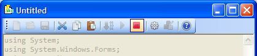

So you've compiled your code successfully. You wont be able to intercept keys until you run your code. To do this you must click the run button.
To stop intercepting keys just click the stop button

Sometimes your code will compile but still doesn't run quite right. If your code throws a runtime error then ScriptKey will stop the code and show the error.
Created with the Personal Edition of HelpNDoc: Free iPhone documentation generator